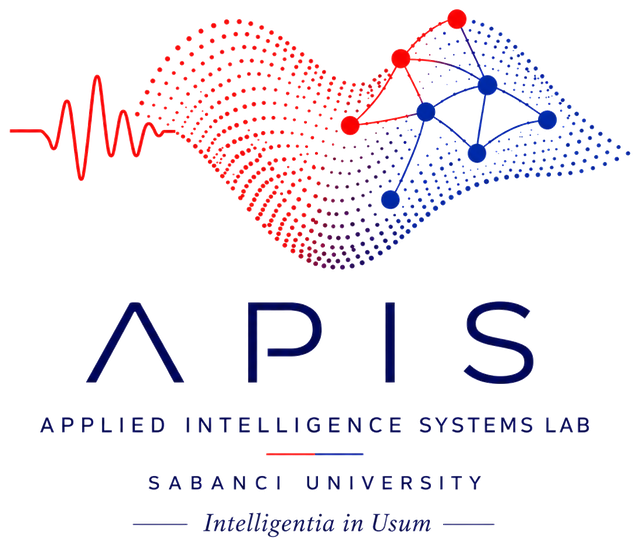
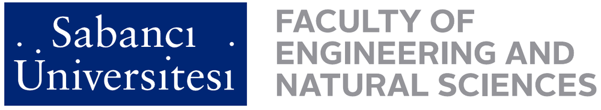

AI for Wireless Networks
Application of AI in wireless communication networks for 5G, 6G, and beyond.
Sabancı University · İstanbul
Intelligentia in Usum
SU-APIS develops applied AI for real systems, from 5G/6G wireless networks and AI hardware to large language models, trustworthy machine learning, and Turkish NLP.
Our research Meet the teamCover: pixel-art rendering of a photo by Retropandy, CC BY-SA 4.0

SU-APIS was co-founded by faculty members of the Faculty of Engineering and Natural Sciences at Sabancı University. We bring together expertise in wireless communications, hardware, machine learning, and language technologies to build intelligent systems that work in practice.
Meet the team →
Our work spans the full stack of applied AI, from radios and chips to language models and their security.
Application of AI in wireless communication networks for 5G, 6G, and beyond.
Hardware implementation of AI inference frameworks, and integration of AI with signal processing pipelines.
LLMs for network management and optimization, networked and hybrid LLM architectures, and LLM-driven knowledge representation, including automated knowledge graph construction.
Security and robustness analysis of neural network models; AI for finance, including time-series forecasting for financial markets; and NLP for low-resource and morphologically rich languages, with a focus on Turkish.
We welcome inquiries from prospective students, collaborators, and industry partners.
Faculty of Engineering and Natural Sciences
Sabancı University, Tuzla
İstanbul, Türkiye
Interested in graduate or undergraduate research? Email us with your CV and research interests.